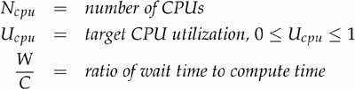

{% include JB/setup %}
{% raw %}
<div>


<a name="ch08lev1sec2" class="calibre18" id="ch08lev1sec2"></a>
<h3 id="title-IDAQCIJL" class="docSection1Title">8.2. Sizing Thread Pools</h3>
<p class="docText1">The ideal size for a thread pool depends on the types of tasks that will be submitted and the characteristics of the deployment system. Thread pool sizes should rarely be hard-coded; instead pool sizes should be provided by a configuration mechanism or computed dynamically by consulting <tt class="calibre25">Runtime.availableProcessors</tt>.</p>
<p class="docText1">Sizing thread pools is not an exact science, but fortunately you need only avoid the extremes of "too big" and "too small". If a thread pool is too big, then threads compete for scarce CPU and memory resources, resulting in higher memory usage and possible resource exhaustion. If it is too small, throughput suffers as processors go unused despite available work.</p>
<p class="docText1">To size a thread pool properly, you need to understand your computing environment, your resource budget, and the nature of your tasks. How many processors does the deployment system have? How much memory? Do tasks perform mostly computation, I/O, or some combination? Do they require a scarce resource, such as a JDBC connection? If you have different categories of tasks with very different behaviors, consider using multiple thread pools so each can be tuned according to its workload.</p>
<p class="docText1">For compute-intensive tasks, an <span class="docEmphasis">N<sub class="calibre40">cpu</sub></span>-processor system usually achieves optimum utilization with a thread pool of <span class="docEmphasis">N<sub class="calibre40">cpu</sub></span> +1 threads. (Even compute-intensive threads occasionally take a page fault or pause for some other reason, so an "extra" runnable thread prevents CPU cycles from going unused when this happens.) For tasks that also include I/O or other blocking operations, you want a larger pool, since not all of the threads will be schedulable at all times. In order to size the pool properly, you must estimate the ratio of waiting time to compute time for your tasks; this estimate need not be precise and can be obtained through pro-filing or instrumentation. Alternatively, the size of the thread pool can be tuned <a name="iddle1525" class="calibre18" id="iddle1525"></a><a name="iddle1526" class="calibre18" id="iddle1526"></a><a name="iddle1672" class="calibre18" id="iddle1672"></a><a name="iddle1673" class="calibre18" id="iddle1673"></a><a name="iddle1729" class="calibre18" id="iddle1729"></a><a name="iddle1784" class="calibre18" id="iddle1784"></a><a name="iddle1950" class="calibre18" id="iddle1950"></a><a name="iddle2246" class="calibre18" id="iddle2246"></a><a name="iddle2296" class="calibre18" id="iddle2296"></a><a name="iddle3208" class="calibre18" id="iddle3208"></a><a name="iddle3542" class="calibre18" id="iddle3542"></a><a name="iddle3579" class="calibre18" id="iddle3579"></a><a name="iddle3614" class="calibre18" id="iddle3614"></a><a name="iddle3615" class="calibre18" id="iddle3615"></a><a name="iddle3616" class="calibre18" id="iddle3616"></a><a name="iddle3630" class="calibre18" id="iddle3630"></a><a name="iddle3930" class="calibre18" id="iddle3930"></a><a name="iddle3938" class="calibre18" id="iddle3938"></a><a name="iddle3971" class="calibre18" id="iddle3971"></a><a name="iddle3972" class="calibre18" id="iddle3972"></a><a name="iddle4307" class="calibre18" id="iddle4307"></a><a name="iddle4308" class="calibre18" id="iddle4308"></a><a name="iddle4313" class="calibre18" id="iddle4313"></a><a name="iddle4314" class="calibre18" id="iddle4314"></a><a name="iddle4665" class="calibre18" id="iddle4665"></a><a name="iddle4666" class="calibre18" id="iddle4666"></a><a name="iddle4763" class="calibre18" id="iddle4763"></a><a name="iddle4801" class="calibre18" id="iddle4801"></a><a name="iddle4834" class="calibre18" id="iddle4834"></a><a name="iddle4855" class="calibre18" id="iddle4855"></a><a name="iddle4987" class="calibre18" id="iddle4987"></a> by running the application using several different pool sizes under a benchmark load and observing the level of CPU utilization.</p>
<p class="docText1">Given these definitions:</p>
<p class="docText1">
</p>
<p class="docText1">The optimal pool size for keeping the processors at the desired utilization is:</p>
<p class="docText1">
</p>
<p class="docText1">You can determine the number of CPUs using <tt class="calibre25">Runtime</tt>:</p>
<div class="docText2"><pre class="calibre36">int N_CPUS = Runtime.getRuntime().availableProcessors();
</pre></div><p class="calibre1"> </p>
<p class="docText1">Of course, CPU cycles are not the only resource you might want to manage using thread pools. Other resources that can contribute to sizing constraints are memory, file handles, socket handles, and database connections. Calculating pool size constraints for these types of resources is easier: just add up how much of that resource each task requires and divide that into the total quantity available. The result will be an upper bound on the pool size.</p>
<p class="docText1">When tasks require a pooled resource such as database connections, thread pool size and resource pool size affect each other. If each task requires a connection, the effective size of the thread pool is limited by the connection pool size. Similarly, when the only consumers of connections are pool tasks, the effective size of the connection pool is limited by the thread pool size.</p>
<a href="21021536.html" class="calibre2"></a>
<p class="calibre3"> </p>

</div>

{% endraw %}

